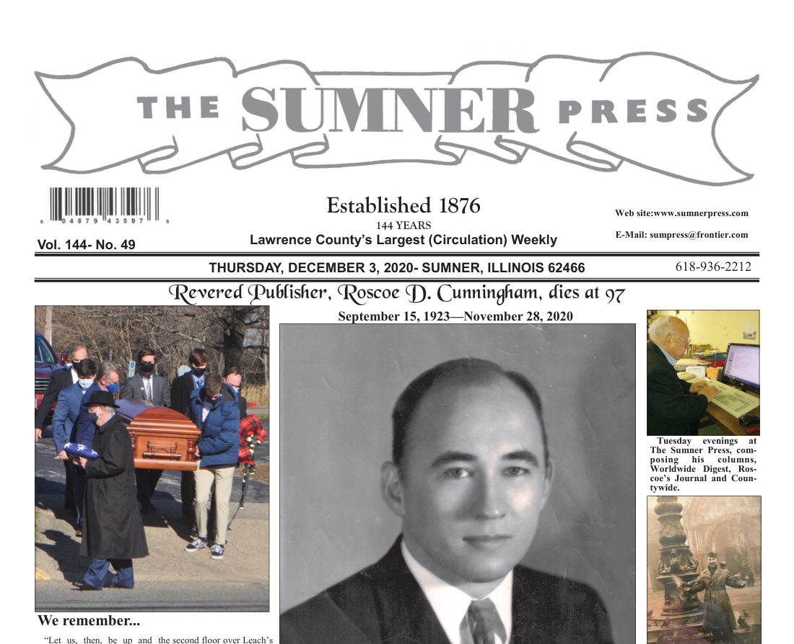
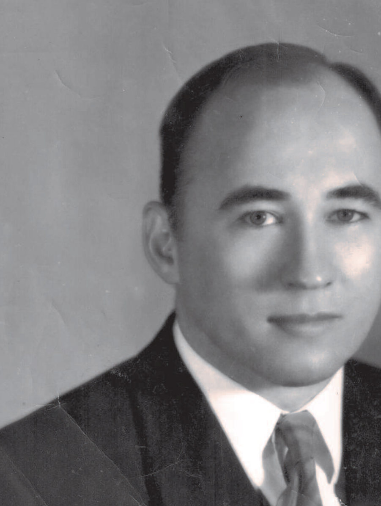
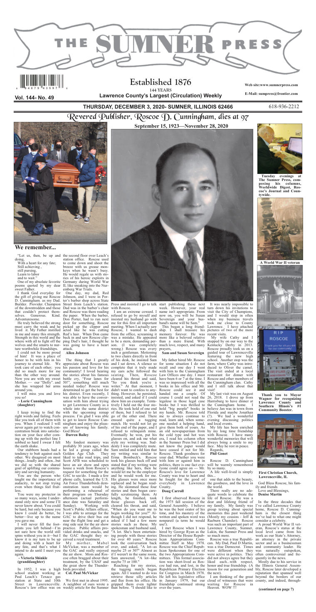

Roscoe wrote three columns a week for thirty-three years, until the weeks before he died at ninety-seven. The offices he held left records; the writing left him. This is everything we've gathered of him, in one place — for the family, and for anyone who wants to meet the man.
Every column he wrote — 372 of them, 2013–2020 — read straight from the original page scans, searchable by any word and filterable by year. Search "Nuremberg," "Four Lanes," or your own name.
Read the Journal › 📖His life told in full — Room 600 at Nuremberg, the law office over the Texaco, four terms in Springfield, the casebook case, rescuing the paper at sixty-four — with his own words woven through every chapter. The title is his: a line he wrote quoting Bacon.
Read the book ›All 372 columns in one book-formatted file, in his own words and spelling, year by year. Tap to open it, then use your browser's save, print, or share button to keep a copy or send it on.
Download the Journal (PDF) › ⬇️The full biography, formatted for reading offline or printing — thirteen chapters, every quotation verbatim and dated.
Download the book (PDF) ›
Born in Lukin, Illinois in 1923, reared "in the tough east end of Sumner," where — as he put it — "audacity was included in our educational curriculum." He proved it in February 1946: a twenty-two-year-old artillery lieutenant, he talked his way past the guards into the Nuremberg war-crimes trial and stood "eyeball to eyeball" with Göring — then lost his nerve at the autograph.
The soldier. U.S. Army, Rainbow Division, artillery forward observer in the European Theater; discharged a first lieutenant in 1946.
The lawyer. Law degree from the University of Illinois, admitted to the bar in 1948 — seventy-two years of practice with not a single mark against him. Four terms as State's Attorney of Lawrence County. He argued Mahrenholz v. County Board — a Lawrence County deed fight that first-year law students still study in property casebooks — and won a federal appeal at eighty in an opinion by Judge Posner.
The legislator. Four terms in the Illinois House for the 54th District (1971–1979); backed the restoration of the death penalty; co-authored a resolution to impeach a Cook County judge who had acquitted a mob hitman. He gave up a safe seat to run for Congress in 1978, and lost — "shocked beyond description," he told the Washington Post.
The newspaperman. At sixty-four, the age others retire, he bought his dying hometown paper and ran it for thirty-three years — the longest-running locally owned newspaper in Southern Illinois — because a paper, he wrote, is "a historical document worth preservation at whatever cost."
The man. Married Kay for sixty-four years; five children; a Master Mason; sixty-six years at First Christian Church, where three weeks before he died he apologized in print for arriving late. Buried at Lawrenceville City Cemetery with military rites.
When he died in November 2020, The Sumner Press gave him a tribute edition — his obituary, twenty-six remembrances from the people of Lawrence County, and the paper he had saved carrying him out. Tap to see the full memorial front page.

{kind=link}